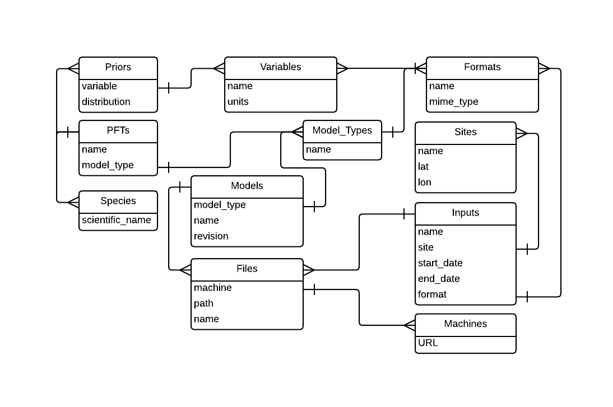
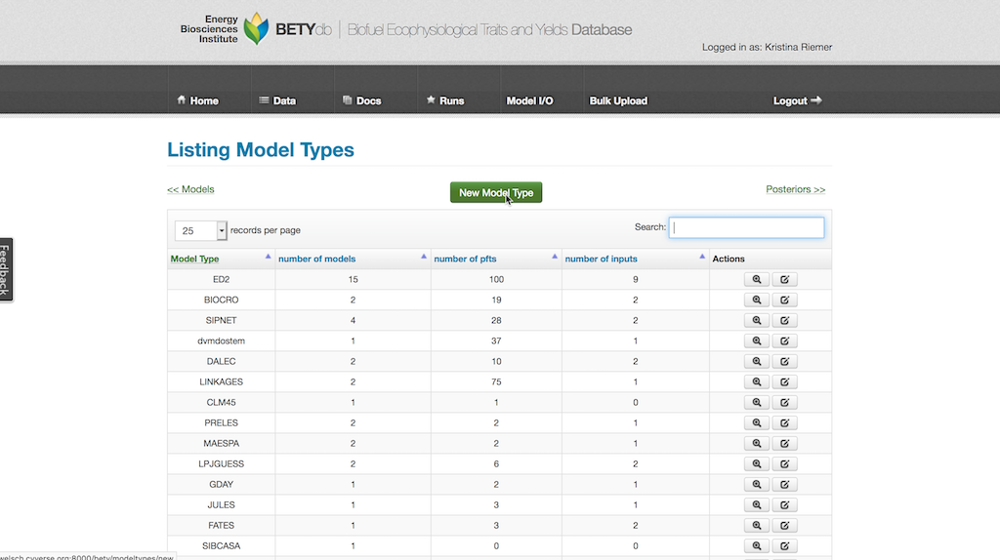
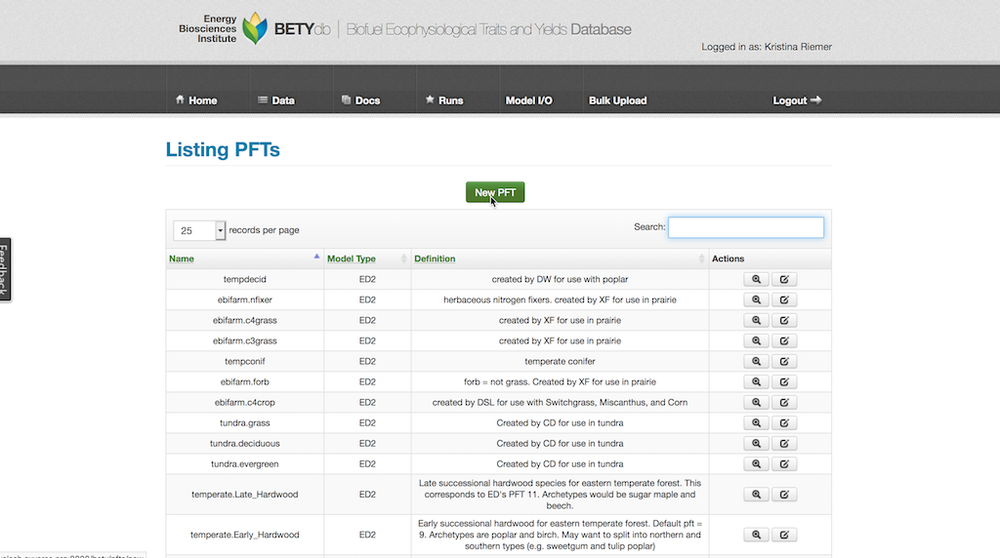
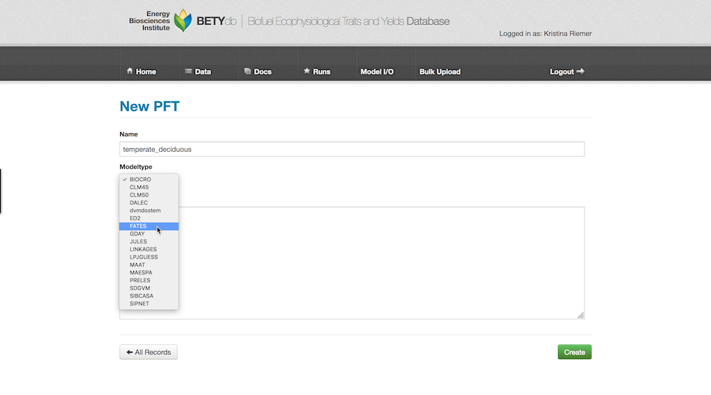
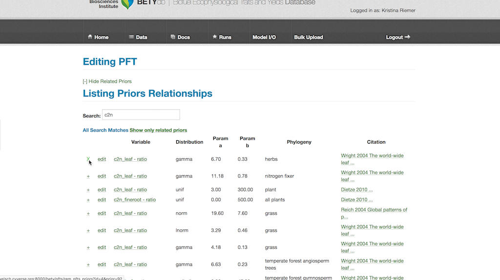
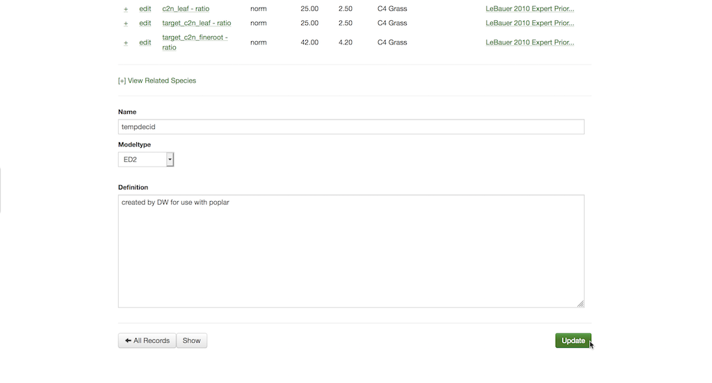
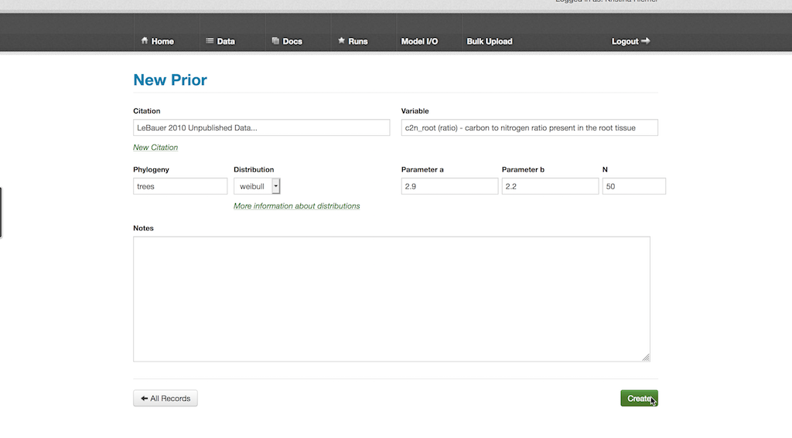
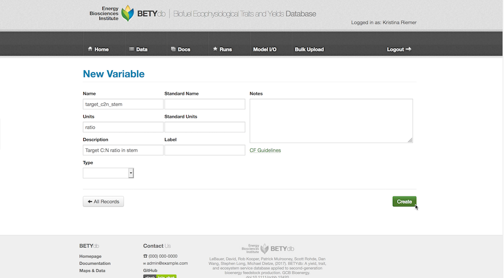

19.1 Adding An Ecosystem Model
Adding a model to PEcAn involves two activities:
- Updating the PEcAn database to register the model
- Writing the interface modules between the model and PEcAn
Note that coupling a model to PEcAn should not require any changes to the model code itself. A key aspect of our design philosophy is that we want it to be easy to add models to the system and we want to using the working version of the code that is used by all other model users, not a special branch (which would rapidly end up out-of-date).
19.1.1 Using PEcAn Database
To run a model within PEcAn requires that the PEcAn database has sufficient information about the model. This includes a MODEL_TYPE designation, the types of inputs the model requires, the location of the model executable, and the plant functional types used by the model.
The instructions in this section assume that you will be specifying this information using the BETYdb web-based interface. This can be done either on your local VM (localhost:3280/bety or localhost:6480/bety) or on a server installation of BETYdb. However you interact with BETYdb, we encourage you to set up your PEcAn instance to support database syncs so that these changes can be shared and backed-up across the PEcAn network.
The figure below summarizes the relevant database tables that need to be updated to add a new model and the primary variables that define each table.

19.1.2 Define MODEL_TYPE
The first step to adding a model is to create a new MODEL_TYPE, which defines the abstract model class. This MODEL_TYPE is used to specify input requirements, define plant functional types, and keep track of different model versions.
The MODEL_TYPE is created by selecting Runs > Model Type and then clicking on New Model Type. The MODEL_TYPE name should be identical to the MODEL package name (see Interface Module below) and is case sensitive.

19.1.3 MACHINE
The PEcAn design acknowledges that the same model executables and input files may exist on multiple computers. Therefore, we need to define the machine that that we are using. If you are running on the VM then the local machine is already defined as pecan. Otherwise, you will need to select Runs > Machines, click New Machine, and enter the URL of your server (e.g. pecan2.bu.edu).
19.1.4 MODEL
Next we are going to tell PEcAn where the model executable is. Select Runs > Files, and click ADD. Use the pull down menu to specify the machine you just defined above and fill in the path and name for the executable. For example, if SIPNET is installed at /usr/local/bin/sipnet then the path is /usr/local/bin/ and the file (executable) is sipnet.
Now we will create the model record and associate this with the File we just registered. The first time you do this select Runs > Models and click New Model. Specify a descriptive name of the model (which doesn’t have to be the same as MODEL_TYPE), select the MODEL_TYPE from the pull down, and provide a revision identifier for the model (e.g. v3.2.1). Once the record is created select it from the Models table and click EDIT RECORD. Click on “View Related Files” and when the search window appears search for the model executable you just added (if you are unsure which file to choose you can go back to the Files menu and look up the unique ID number). You can then associate this Model record with the File by clicking on the +/- symbol. By contrast, clicking on the name itself will take you to the File record.
In the future, if you set up the SAME MODEL VERSION on a different computer you can add that Machine and File to PEcAn and then associate this new File with this same Model record. A single version of a model should only be entered into PEcAn once.
If a new version of the model is developed that is derived from the current version you should add this as a new Model record but with the same MODEL_TYPE as the original. Furthermore, you should set the previous version of the model as Parent of this new version.
19.1.5 FORMATS
The PEcAn database keep track of all the input files passed to models, as well as any data used in model validation or data assimilation. Before we start to register these files with PEcAn we need to define the format these files will be in. To create a new format see Formats Documentation.
19.1.6 MODEL_TYPE -> Formats
For each of the input formats you specify for your model, you will need to edit your MODEL_TYPE record to add an association between the format and the MODEL_TYPE. Go to Runs > Model Type, select your record and click on the Edit button. Next, click on “Edit Associated Formats” and choose the Format you just defined from the pull down menu. If the Input box is checked then all matching Input records will be displayed in the PEcAn site run selection page when you are defining a model run. In other words, the set of model inputs available through the PEcAn web interface is model-specific and dynamically generated from the associations between MODEL_TYPEs and Formats. If you also check the Required box, then the Input will be treated as required and PEcAn will not run the model if that input is not available. Furthermore, on the site selection webpage, PEcAn will filter the available sites and only display pins on the Google Map for sites that have a full set of required inputs (or where those inputs could be generated using PEcAn’s workflows). Similarly, to make a site appear on the Google Map, all you need to do is specify Inputs, as described in the next section, and the point should automatically appear on the map.
19.1.7 INPUTS
After a file Format has been created then input files can be registered with the database. Creating Inputs can be found under How to insert new Input data.
19.1.8 Add Plant Functional Types (PFTs)
Since many of the PEcAn tools are designed to keep track of parameter uncertainties and assimilate data into models, to use PEcAn with a model it is important to define Plant Functional Types for the sites or regions that you will be running the model.
Create a new PFT entry by selecting Data > PFTs and then clicking on New PFT.

Give the PFT a descriptive name (e.g., temperate deciduous). PFTs are MODEL_TYPE specific, so choose your MODEL_TYPE from the pull down menu.

19.1.8.1 Species
Within PEcAn there are no predefined PFTs and user can create new PFTs very easily at whatever taxonomic level is most appropriate, from PFTs for individual species up to one PFT for all plants globally. To allow PEcAn to query its trait database for information about a PFT, you will want to associate species with the PFT record by choosing Edit and then “View Related Species”. Species can be searched for by common or scientific name and then added to a PFT using the +/- button.
19.1.8.2 Cultivars
You can also define PFTs whose members are cultivars instead of species. This is designed for analyses where you want to want to perform meta-analysis on within-species comparisons (e.g. cultivar evaluation in an agricultural model) but may be useful for other cases when you want to specify different priors for some member of a species. You cannot associate both species and cultivars with the same PFT, but the cultivars in a cultivar PFT may come from different species, potentially including all known cultivars from some of the species, if you wish to and have thought about how to interpret the results.
It is not yet possible to add a cultivar PFT through the BETYdb web interface. See this GithHub comment for an example of how to define one manually in PostgreSQL.
19.1.9 Adding Priors for Each Variable
In addition to adding species, a PFT is defined in PEcAn by the list of variables associated with the PFT. PEcAn takes a fundamentally Bayesian approach to representing model parameters, so variables are not entered as fixed constants but as prior probability distributions.
There are a wide variety of priors already defined in the PEcAn database that often range from very diffuse and generic to very informative priors for specific PFTs.
These pre-existing prior distributions can be added to a PFT. Navigate to the PFT from Data > PFTs and selecting the edit button in the Actions column for the chosen PFT.
Click on “View Related Priors” button and search through the list for desired prior distributions. The list can be filtered by adding terms into the search box. Add a prior to the PFT by clicking on the far left button for the desired prior, changing it to an X.

Save this by scrolling to the bottom of the PFT page and hitting the Update button.

19.1.9.1 Creating new prior distributions
A new prior distribution can be created for a pre-existing variable, if a more constrained or specific one is known.
- Select Data > Priors then “New Prior”
- In the Citation box, type in or select an existing reference that indicates how the prior was defined. There are a number of unpublished citations in current use that simply state the expert opinion of an individual
- Fill the Variable box by typing in part or all of a pre-existing variable’s name and selecting it
- The Phylogeny box allows one to specify what taxonomic grouping the prior is defined for, at it is important to note that this is just for reference and doesn’t have to be specified in any standard way nor does it have to be monophyletic (i.e. it can be a functional grouping)
- The prior distribution is defined by choosing an option from the drop-down Distribution box, and then specifying values for both Parameter a and Parameter b. The exact meaning of the two parameters depends on the distribution chosen. For example, for the Normal distribution a and b are the mean and standard deviation while for the Uniform they are the minimum and maximum. All parameters are defined based on their standard parameterization in the R language
- Specify the prior sample size in N if the prior is based on observed data (independent of data in the PEcAn database)
- When this is done, scroll down and hit the Create button

The new prior distribution can then be added a PFT as described in the “Adding Priors for Each Variable” section.
19.1.9.2 Creating new variables
It is important to note that the priors are defined for the variable name and units as specified in the Variables table. If the variable name or units is different within the model it is the responsibility of write.configs.MODEL function to handle name and unit conversions (see Interface Modules below). This can also include common but nonlinear transformations, such as converting SLA to LMA or changing the reference temperature for respiration rates.
To add a new variable, select Data > Variables and click the New Variable button. Fill in the Name field with the desired name for the variable and the units in the Units field. There are additional fields, such as Standard Units, Notes, and Description, that can be filled out if desired. When done, hit the Create button.

The new variable can be used to create a prior distribution for it as in the “Creating new prior distributions” section.
19.1.10 Interface Modules
19.1.10.1 Setting up the module directory (required)
PEcAn assumes that the interface modules are available as an R package in the models directory named after the model in question. The simplest way to get started on that R package is to make a copy the template directory in the pecan/models folder and re-name it to the name of your model. In the code, filenames, and examples below you will want to substitute the word MODEL for the name of your model (note: R is case-sensitive).
If you do not want to write the interface modules in R then it is fairly simple to set up the R functions describe below to just call the script you want to run using R’s system command. Scripts that are not R functions should be placed in the inst folder and R can look up the location of these files using the function system.file which takes as arguments the local path of the file within the package folder and the name of the package (typically PEcAn.MODEL). For example